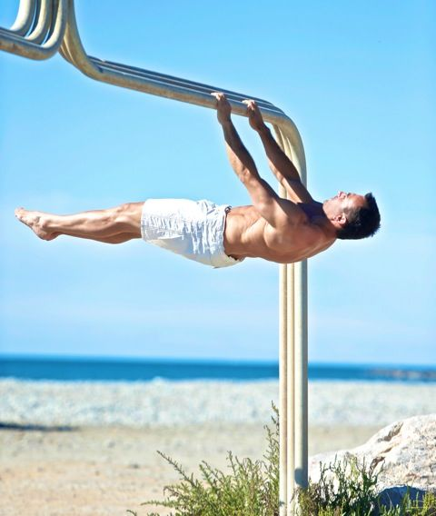

Front lever

Front lever lub inaczej waga przodem w zwisie jest elementem statycznym wywodzącym się z gimnastyki. Jest również wykonywana i pożądana przez osoby ćwiczące kalistenikę/ street workout, ponieważ świetnie rozbudowuje siłę całego ciała przy czym wygląda bardzo imponująco i efektownie. Ćwiczenie to polega na przytrzymaniu całego prostego ciała w zwisie w pozycji horyzontalnej, poziomej utrzymując się tylko i wyłącznie dłońmi na drążku.
Dla wielu osób, szczególnie początkujących lub nie znających w ogóle kalisteniki przytrzymanie front levera wydaje się niemożliwe, a nawet przeczące prawom fizyki… Nie da się ukryć, że opanowanie ćwiczenia wymaga sporo pracy, ale zdecydowanie jest możliwe do wykonania.
Poprawna technika i najczęściej popełniane błędy
Wykonując poprawnie technicznie wagę przodem w zwisie musisz zwrócić uwagę na ustawienie łopatek w retrakcji i depresji czyli ściągnięciu i opuszczeniu. Często popełniany błąd po części wynikający z braku świadomości ciała to mocno zaokrąglone plecy. Zaokrąglone plecy świadczą o tym, że grupa mięśni grzbietu, a w szczególności mięśnia czworobocznego nie jest wystarczająco silna. Istotne są także proste łokcie, jeżeli masz z tym wyzwanie popracuj nad mięśniami tricepsów. Nie wysuwaj zbyt mocno głowy w przód, niepotrzebnie napniesz kark. Prawidłowa pozycja miednicy będzie ustawiona w tyłopochyleniu na wysokości barków tak aby całe Twoje ciało było w poziomej linii. Nie zapominaj o tym aby całkowicie napiąć wszystkie partie mięśniowe – również pośladki i uda, które pomogą w stabilizacji miednicy, a nie tylko mięśnie brzucha! Pilnuj tego aby biodra nie opadały niżej niż tułów. Palce od stóp obciągnij, pomoże to wygenerować jeszcze większe napięcie całego ciała co przełoży się na zwiększenie siły.
Jak rozpocząć przygodę z front leverem?
Rozpoczynając przygodę z kalisteniką praktycznie każda osoba wyznacza sobie jakiś cel. Dla niektórych, będzie to zrzucenie zbędnych kilogramów, zwiększenie masy mięśniowej, poprawa ogólnej sprawności lub nauka danego elementu. Jeżeli jesteś osobą początkującą, a marzy Ci się front lever to na samym początku musisz przeanalizować jakie grupy mięśni najbardziej są zaangażowane.
W przypadku wagi przodem w zwisie pracuje całe nasze ciało, ale największą pracę wykonują nasze plecy czyli m.in. mięsień czworoboczny i najszerszy grzbietu, do tego dochodzą nasze ramiona w tym tricepsy, cały nasz korpus w skład którego wchodzą mięśnie proste, skośne brzucha, również grupa mięśni głębokich brzucha. Ważną role odgrywają też mięsień czworoboczny lędźwi, grupa mięśni pośladków i ud. Patrząc zatem na mięśnie nad którymi w szczególności musimy pracować warto na początku swojej drogi skupić się na podstawach jak podciągnięcia na drążku, pompki, dipy na poręczach, sylwetki gimnastyczne przede wszystkich hollow body, plank i wszelkiego rodzaju wznosy nóg. Gdy już nabierzemy odpowiedniej sprawności i siły możemy do planu treningowego wrzucić tzw. progresje czyli łatwiejsze wersje elementu oraz trudniejsze ćwiczenia uzupełniające, które jeszcze bardziej będą angażować potrzebne partie mięśniowe, co z czasem doprowadzi nas do opanowania front levera.
Progresje
- Tucked front lever
- Advanced tucked front lever
- Straddle front lever
- Half front lever
- Full front lever
Ćwiczenia uzupełniające
Oprócz progresji warto w treningu wykonywać ćwiczenia uzupełniające. Możesz wykorzystać do tego pracę ekscentryczną stosując tzw. „negatywy”, czyli w zwisie na drążku zejścia z pozycji pionowej do poziomu. Możesz wykorzystać do tego pracę koncentryczną wykonując wznosy tułowia i bioder, które świetnie będą budowały siłę pleców oraz brzucha. Wcześniej wspomniane ćwiczenie jakim jest dragon flag porządnie wzmocni nasze mięśnie brzucha. Nie zapominajmy również o wszelkiego rodzaju ćwiczeniach w których angażujemy nasze łopatki np. w podporze przodem, zwisie, ściągając gumę oporową i wiele innych. Można by pomyśleć, że trenując nogi zwiększymy ich masę mięśniową przez co może być nam ciężej przytrzymać ten element. Pamiętajmy jednak, że jeżeli nasze pośladki i uda nie będą odpowiednio wzmocnione i przystosowane do utrzymania odpowiedniego napięcia możemy mieć problem z ustabilizowaniem miednicy, a co za tym idzie z utrzymaniem cała w poziomie.
Front lever to element który przede wszystkim wymaga czasu, a co za tym idzie cierpliwości. Pamiętaj, żeby odpowiednio się przygotować do nauki tego elementu (jak zresztą każdego innego) i realnie ocenić swój poziom zaawansowania, żeby nie rzucać się na głęboką wodę i nie próbować wykonywać trudniejszej progresji niż aktualnie jesteś w stanie faktycznie zrobić. Miej na uwadze swoje zdrowie. Moim zdaniem kluczem do osiągnięcia tego celu jest przede wszystkim dokładność wykonywanych ćwiczeń aby odpowiednio angażować konieczne partie mięśniowe. Jeżeli więc jako Twój cel obrałeś wagę przodem w zwisie daj sobie czas, nie śpiesz się ale wykonuj wszystko sumiennie i regularnie, a efekty Cię zaskoczą.